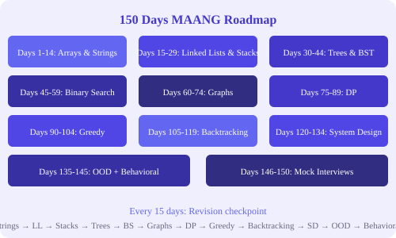

← Back to Tutorials

DSA – LeetCode: 150 Days MAANG Roadmap
A structured 150-day roadmap to master Data Structures & Algorithms for MAANG (Meta, Amazon, Apple, Netflix, Google) interviews. Each chapter covers key problem patterns, optimized solutions in Python/C++/Java, and daily practice exercises.
How to Use This Roadmap
Solve 2–3 problems daily from the current topic Every 15 days is a revision checkpoint — revisit previously solved problems Track progress in a spreadsheet or LeetCode lists Aim for understanding patterns, not memorizing solutions Table of Contents
1. Arrays Two Sum, Best Time, Majority Element, Move Zeroes, Squares of Sorted Array, Merge Sorted Array, Pivot Index, Running Sum 2. Strings Valid Palindrome, Longest Common Prefix, Valid Anagram, Reverse String, Isomorphic Strings, Add Strings, FizzBuzz, Roman to Integer 3. Linked Lists Reverse Linked List, Merge Two Lists, Palindrome Linked List, Intersection of Two Lists, Linked List Cycle, Add Two Numbers, Copy List with Random Pointer 4. Stacks & Queues Valid Parentheses, Queue using Stacks, Backspace Compare, Next Greater Element, Min Stack, Decode String, Daily Temperatures 5. Trees Binary Tree Traversals, Maximum Depth, Symmetric Tree, Path Sum, BST operations, Serialize/Deserialize, Lowest Common Ancestor 6. Binary Search Search Insert Position, First Bad Version, Peak Element, Rotated Sorted Array, Median of Two Sorted Arrays 7. Graphs Flood Fill, Island Perimeter, Number of Islands, Clone Graph, Course Schedule, Pacific Atlantic Water Flow, Network Delay Time 8. Dynamic Programming Climbing Stairs, Pascal's Triangle, 3Sum, Merge Intervals, Container With Most Water, Subarray Sum Equals K, Jump Game, Coin Change, Longest Increasing Subsequence, House Robber, Decode Ways 9. Greedy & Advanced Interval Scheduling, Gas Station, Partition Labels, Candy, Trapping Rain Water, Skyline Problem 10. Backtracking Permutations, Combinations, Generate Parentheses, N-Queens, Sudoku Solver, Word Search 11. System Design Rate Limiter, Library Management, Parking Lot, Amazon Shopping, Notification System, Uber Backend, Google Drive, Twitter, YouTube 12. OOD Design ATM, Airline Management, Restaurant System, Car Rental, Chess, Ticketmaster, LinkedIn, Facebook 13. Behavioral Interview Strengths/Weaknesses, Ambiguity, Leadership Principles, Conflict Resolution, Stress Management, Initiative, Trust Building, Feedback 14. Revision Days Day 14, 29, 44, 59, 74, 89, 104, 119, 134, 135 — checkpoints to revisit solved problems 15. Bonus Final wrap-up, mock interviews, quick guide, useful resources
Start Learning →